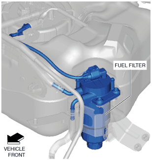
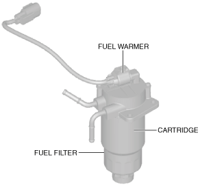

FUEL FILTER [SKYACTIV-D 1.5]
id0114q2707000
Purpose, Function
• The fuel filter removes foreign matter and dirt in the fuel.
Construction
• The fuel filter is installed between the fuel tank and the supply pump and it is located next to fuel tank.

am2zzn00003282
• The fuel filter consists of the fuel warmer and the cartridge.

am2zzn00003283